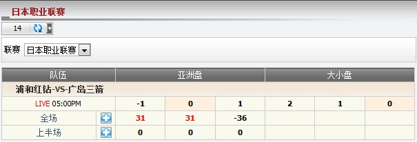

亚洲盘/大小盘/滚球
显示总代理根据亚洲盘/大小盘/滚球之投注类型的输赢 (图1.1)。

图 1.1
注:
- 若 赔率 < 0
- 如果会员赢那么赔率 = 1.
- 如果会员输那么赔率 = |当前赔率|。
- 若 赔率 > 0
- 如果会员赢那么赔率 = 当前赔率。
- 如果会员输那么赔率 = 1.
在这个例子中, 会员投注于 浦和红钻 -vs- 广岛三箭, 投注额 = 120, 赔率 = 0.86, 总代理占成 = 30%, 代理占成 = 40%, 投注类型 = 亚洲盘, 会员选择: 广岛三箭 0.5.
- 若 (主队比分 - 客队比分) > 0 那么会员会输。
--> 总代理会赢: 120 * 30% = 36.
- 若 (主队比分 - 客队比分) <= 0 那么会员会赢。
--> 总代理会输: 120 * 0.86 * 30% = 31.